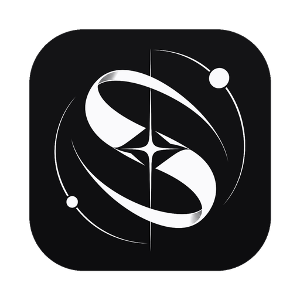
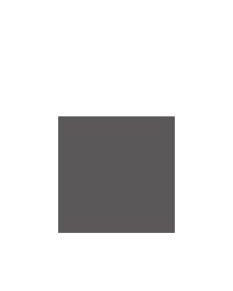
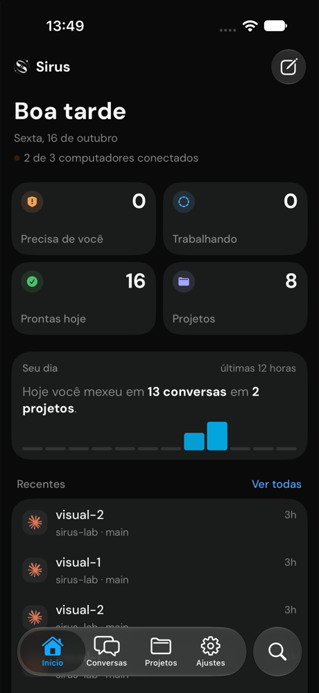
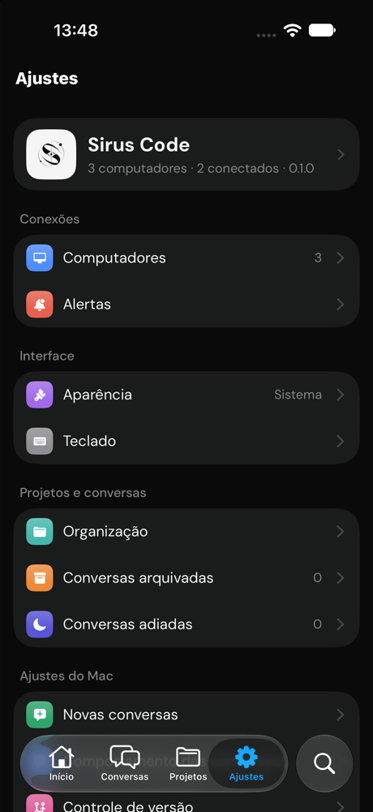

Parallel sessions
Start as many as you need across projects. Each keeps its own transcript, terminal and state.
Annual pricing switchCodex · working 4m
Validate invoice inputClaude · needs approval
Expand getting startedCodex · ready to review

Sirus CodeClaude Code, Codex, OpenCode, Cursor and more work side by side, each in its own worktree. Every change waits for your review before it lands.
WORKS WITH THE AGENT CLIS YOU ALREADY USE

OpenCode
Cursor
Devin
HermesFEATURES
Projects, sessions and worktrees live in one window, and nothing reaches your branch until you say so.
Start as many as you need across projects. Each keeps its own transcript, terminal and state.
Give a session its own Git worktree so agents never edit the same files.
Every turn lists its files. Keep or undo them, read the diff, stage and commit in place.
Choose the access level for each turn. Commands and edits wait for you whenever you want them to.
A real terminal and a browser tab sit beside every conversation.
Supabase, Linear, Notion and 23 more over MCP. Sirus handles the sign in.
Each provider's real quota and when it resets, with several accounts for Codex and Claude.
Your agents write the code. You stay the one who decides what ships.
HOW IT WORKS
Open the .dmg, drag Sirus Code to Applications, then allow it once in Privacy and Security.
Point Sirus at any Git folder. Your agent CLIs keep their own sign in; Sirus finds them.
Pick an agent and a model, choose the current checkout or a worktree, and give it a task.


IPHONE
Pair your iPhone with a QR code and follow every session on your tailnet, wherever you are.
FAQ
Yes. It is open source under the MIT license. You pay only for the agents you already use, through your own accounts.
Claude Code, Codex, OpenCode, Cursor, Grok, Devin and Hermes. Install the CLI and sign in once; Sirus picks it up.
The app is not notarized by Apple yet. The first time, open it, click Done, then choose Open Anyway in System Settings, Privacy and Security. After that it opens like any app.
Sirus has no account and no cloud. Your code goes only where your agent CLI already sends it.
No. The iPhone app is optional and connects to your Mac or server through Tailscale.
Macs with Apple silicon on macOS 14 or later.
Free and open source. Ready in about a minute.
Sirus Code is not notarized yet, so macOS asks for your OK the first time. It takes about a minute.